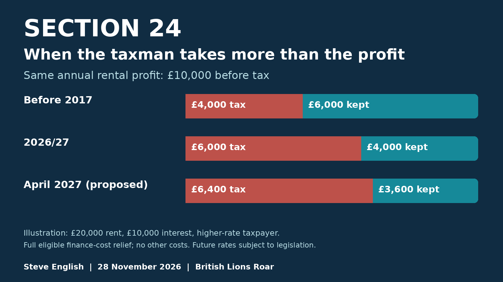

Section 24: When the Taxman Takes More Than the Profit
How Conservative finance-cost restrictions and Labour’s announced property tax increases affect the economics of private renting.

A profitable property can still produce a tax-induced loss
A residential landlord can receive £20,000 in annual rent, pay £10,000 in mortgage interest and make £10,000 before tax. Under the old system, a higher-rate taxpayer in this example paid £4,000 in income tax. Under today's rules the figure is £6,000. From April 2027 it could reach £6,400. The underlying profit has not changed.
A landlord's worked example, shared in response to our earlier policy briefing, illustrates why Section 24 deserves close examination. The issue is not simply the headline rate of tax: it is the way taxable property profit is calculated, and how finance costs are relieved.
1. Where Section 24 came from
Section 24 of the Finance (No. 2) Act 2015 was introduced under the Conservative government of George Osborne. Its stated aim was to restrict relief for residential finance costs to the basic rate of income tax. The policy was intended to reduce differences in tax treatment and address perceived advantages of buy-to-let investment over owner-occupation. The restriction was phased in from April 2017 and fully implemented from April 2020.
Before the reform, qualifying interest could generally be deducted when calculating taxable rental profit. Today, individual residential landlords generally calculate taxable property profit before finance costs, then claim a basic-rate reduction in their tax liability. Other allowable operating expenses remain deductible; mortgage capital repayments were not deductible as interest under either system.
Sources: Section 24, Finance (No. 2) Act 2015; HMRC original policy explanation; HMRC worked examples.
2. What changes in April 2027?
The 2025 and 2026 Budgets together set out a four-percentage-point increase in property rates. The October 2026 measure proposes rates of 24%, 44% and 49%, subject to the legislative process. The finance-cost reduction is linked to the property basic rate from 2027, so the illustrative reduction rises to 24%.
The government's stated objective is to raise revenue to fund its commitments. The October policy paper estimates that its further two-point increase will affect about 2.4 million landlords by 2031/32. The figures in this article use the announced English rates and assume no separate devolved variation.
Sources: October 2026 HMRC policy paper; Finance Act 2026; LITRG explanation of property income and the 2027 tax reducer.
3. Worked example: the same £10,000 profit
The following model assumes all relevant property profit falls in the higher-rate band, full eligible finance-cost relief, no other expenses, no threshold effects and unchanged rent and interest. These assumptions isolate the impact of the rules rather than predict an individual's bill.
| Annual figures | Pre-2017 | 2026/27 | Announced 2027/28 |
|---|---|---|---|
| Rent | £20,000 | £20,000 | £20,000 |
| Mortgage interest | £10,000 | £10,000 | £10,000 |
| Commercial profit | £10,000 | £10,000 | £10,000 |
| Taxable property profit | £10,000 | £20,000 | £20,000 |
| Tax before reduction | £4,000 | £8,000 | £8,800 |
| Finance-cost reduction | — | £2,000 | £2,400 |
| Tax payable | £4,000 | £6,000 | £6,400 |
| Profit after tax | £6,000 | £4,000 | £3,600 |
| Effective rate on commercial profit | 40% | 60% | 64% |
The tax liability increases by 60% between the old and announced future treatments. Retained profit drops by 40%. The latest annual increase is £400, or about 6.7% of the present £6,000 bill. These figures distinguish a percentage-point rate change from a percentage change in the amount paid.
4. When the tax exceeds the entire profit
Consider a more highly leveraged property receiving the same rent but costing £16,000 in annual interest. Before any other costs, it generates £4,000 of actual profit.
| Annual figures | Pre-2017 | 2026/27 | Announced 2027/28 |
|---|---|---|---|
| Commercial profit | £4,000 | £4,000 | £4,000 |
| Tax payable | £1,600 | £4,800 | £4,960 |
| Profit after tax | £2,400 | −£800 | −£960 |
| Effective rate | 40% | 120% | 124% |
Under these assumptions, tax converts a positive operating return into a loss. A 124% effective rate is not a statutory income-tax band; it is the ratio of tax payable to actual profit. Repairs, insurance and other allowable costs change the numbers. Mortgage principal, vacancies and cash reserves also affect real-world cash flow.
The general current higher-rate formula with full relief is 40% of profit before interest less 20% of eligible interest. The announced future equivalent is 44% less a 24% interest reduction. On £20,000 of income before interest, the break-even interest cost is £15,000 currently, falling to approximately £14,737 in the announced regime. Actual relief is limited by eligible finance costs, property profits and adjusted total income as applicable; unused amounts can carry forward. The calculation is therefore illustrative rather than personal tax advice.
5. The cumulative impact since 2017
The restriction was phased in over four years. Holding the first example constant and comparing with the old 40% treatment gives the following illustrative extra liability.
| Tax year(s) | Interest deductible from taxable profit | Annual tax | Extra over old treatment |
|---|---|---|---|
| 2017/18 | 75% | £4,500 | £500 |
| 2018/19 | 50% | £5,000 | £1,000 |
| 2019/20 | 25% | £5,500 | £1,500 |
| 2020/21–2026/27 (7 years) | 0% | £6,000 | £14,000 total |
| Cumulative through 2026/27 | £17,000 | ||
| 2027/28 (announced) | 0% | £6,400 | £2,400 |
| Cumulative through 2027/28 | £19,400 |
The final total includes the future announced rate change and a full current tax year, not actual historic payments or a forecast of sector-wide receipts. The comparison freezes rent, interest, rates and band position. Real households experienced changing mortgage costs, rents and tax circumstances. Comparing 2027 with a hypothetical 44% regime allowing full interest deduction would instead isolate £2,000 of extra tax attributable to the finance-cost restriction.
Source for phase-in: HMRC finance-cost worked examples.
6. Taxable income and the threshold trap
The finance-cost tax reduction occurs after taxable property profit is calculated. A landlord with employment earnings near the higher-rate threshold may therefore be pushed into a higher band even where the cash profit from letting is modest. Higher adjusted net income can also affect the personal allowance taper above £100,000 and the High Income Child Benefit Charge, where applicable. These are separate mechanisms and outcomes depend on the household's circumstances. Means-tested benefits may use different income definitions; no blanket claim about Universal Credit or other entitlements follows from this tax calculation.
The Office of Tax Simplification's 2022 review recorded 266,000 taxpayers with unused finance-cost relief brought forward in 2019/20, compared with 1.19 million declaring residential finance costs. That illustrates the practical importance of the limits on relief, rather than showing that all of those taxpayers made losses.
Sources: Office of Tax Simplification property income review; HMRC worked examples.
7. Individual and corporate ownership
UK companies and qualifying overseas companies are outside this particular individual-landlord restriction. Company profits are subject to their own finance-cost rules and corporation tax; extraction of profits by shareholders may trigger further personal tax. Existing personally owned properties cannot necessarily be transferred into a company without capital gains tax, transaction taxes, refinancing costs or other consequences.
The central distinction is that two otherwise identical rental properties can have different taxable profit calculations depending on ownership structure. This is an incentive to consider incorporation, not proof that every company pays less overall. The OBR's 2026 costing itself allows for additional tax-motivated incorporation in response to higher property rates.
Sources: HMRC rental income guidance; OBR October 2026, paragraph 3.17.
8. Retirement investments and rental supply
In the English Private Landlord Survey 2024, 56% viewed their role as a long-term investment contributing to their pension. The share intending to reduce or sell their portfolios was 16% in 2018, 22% in 2021 and 31% in 2024. Among those intending to reduce their portfolios in 2024, 66% cited recent taxation and legislation; 40% cited viability factors including interest rates. The survey was undertaken before Labour entered government in July 2024, and measures intentions rather than completed transactions.
An owner selling to an owner-occupier can reduce the rental stock while increasing home ownership; a sale to another landlord need not reduce stock. The distribution between these outcomes, new construction and local demand determines the net effect. A tax change may also encourage larger or corporate operators to acquire properties from smaller landlords. The survey does not independently identify Section 24 as the sole cause.
Source: English Private Landlord Survey 2024.
9. What the independent fiscal watchdog expects
The Office for Budget Responsibility's October 2026 outlook, paragraph 3.46, identifies two channels by which the cumulative tax changes could raise rents: fewer entrants into the market, and existing landlords passing more of their costs on over time as some competitors exit. It regards excess rental demand as more likely than not, and notes that higher rents would offset part of the deterioration in landlord returns. This is a forecast, not a measurement of effects that have already happened.
The significance is that fiscal policy affects tenants as well as owners. The extent of cost pass-through depends on supply, demand, competition and local incomes. It is not established that every landlord can raise rent or that every tax increase translates pound-for-pound into rent.
Source: OBR October 2026 economic and fiscal outlook, paragraph 3.46.
10. What Reform UK has actually committed to
The 2024 contract explicitly promised to abolish Section 24 in its housing programme for the first 100 days. The published October 2026 economic measures include ending mandatory EPC improvements, repealing the Renters’ Rights Act and making quarterly MTD reports voluntary. That list was presented as additional to other economic policies. No explicit withdrawal of the earlier Section 24 commitment has been identified in our review; neither has a fresh costing or timetable been established.
On 16 November 2026 Robert Jenrick publicly criticised the four-point rental income tax increase and the additional-home Stamp Duty surcharge increase. This demonstrates opposition to the increases in his commentary, but does not in itself constitute a formal reversal pledge. The direct source was supplied with a screenshot; automated access to X was blocked. The party's separate brownfield incentives concern qualifying new homes, not general finance-cost relief for existing properties.
Sources: Reform UK 2024 Contract, p.15; October 2026 economic measures; Jenrick’s 16 November X post; September conference tax proposals.
11. The economic case and trade-offs
Restoring full deductibility would bring taxable profit closer to the operating profit of a financed rental business and reduce the particular incentive to incorporate. It could improve viability for indebted individual landlords. The effect on investment and rents would depend on funding, interest rates and housing supply. Conversely, the original rationale for the restriction was to limit advantages of leveraged property investment relative to prospective homeowners. A repeal would have an Exchequer cost, and any supply benefits would need to be weighed against that cost and the distribution of relief. Alternative designs could include gradual restoration or targeted relief; these are analytical options, not attributed party policies.
Conclusion
The central question is how to tax rental businesses without creating liabilities disconnected from their cash profitability, while maintaining adequate housing supply and tenant protections. The illustrative figures show exactly how the finance-cost restriction and announced tax rates can combine. The OBR's analysis provides independent evidence that the consequences may extend to tenants through the rental market. A durable reform would need published costings, clear rules and a transition that landlords and tenants can plan around.
For the wider policy picture, including Stamp Duty, EPC standards, digital reporting and tenancy legislation, read our updated private landlord policy briefing and the Reform UK Policy & Document Library.
Independent analysis. Examples are hypothetical, use the stated assumptions and are not individual tax advice. Research position: 28 November 2026.